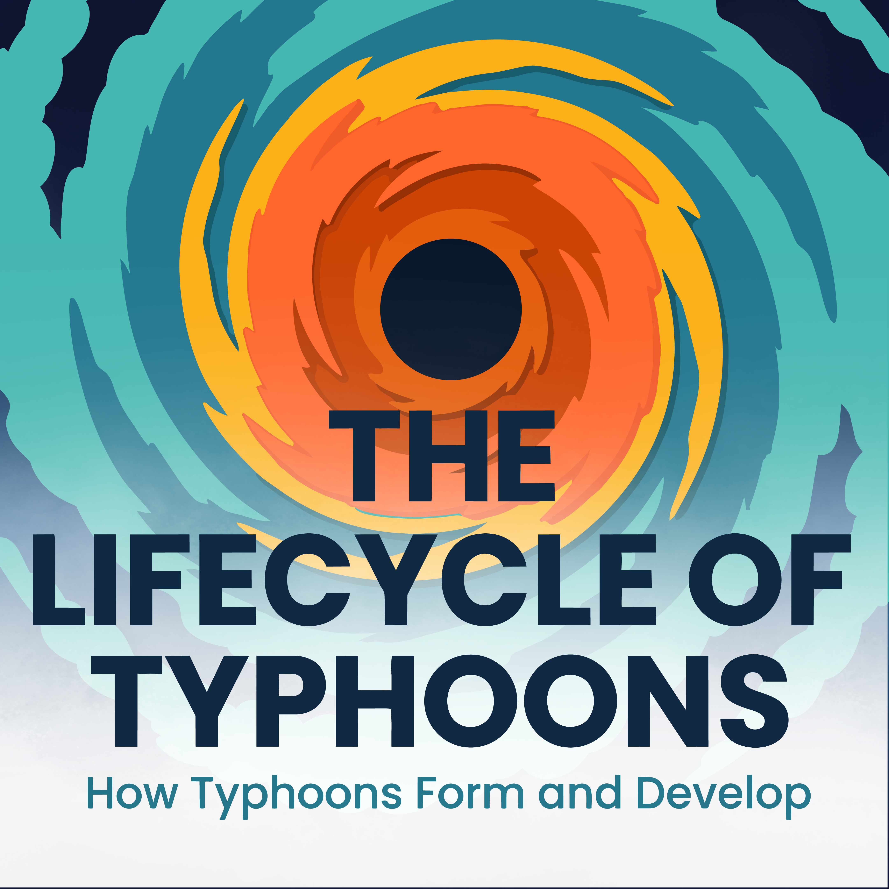
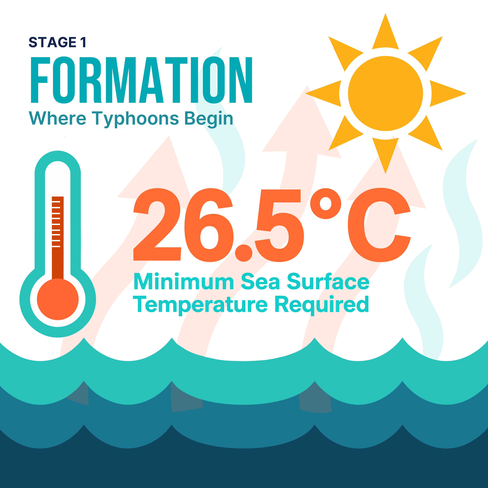
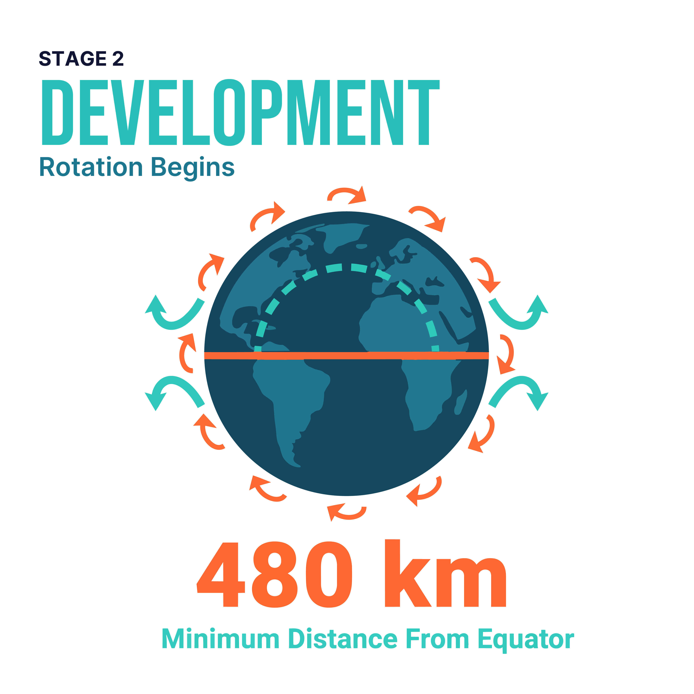
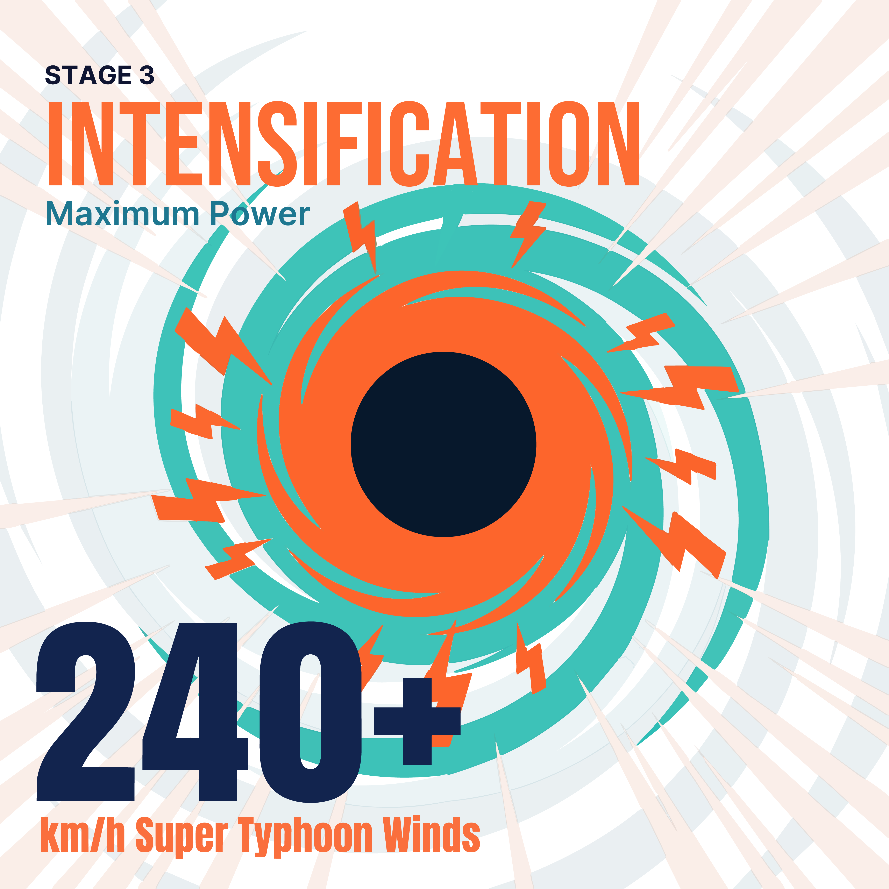
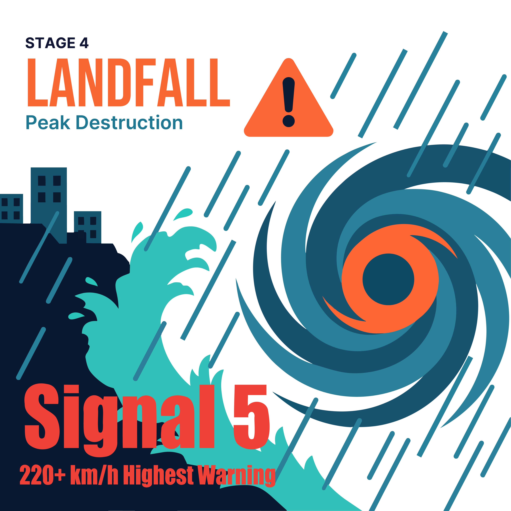
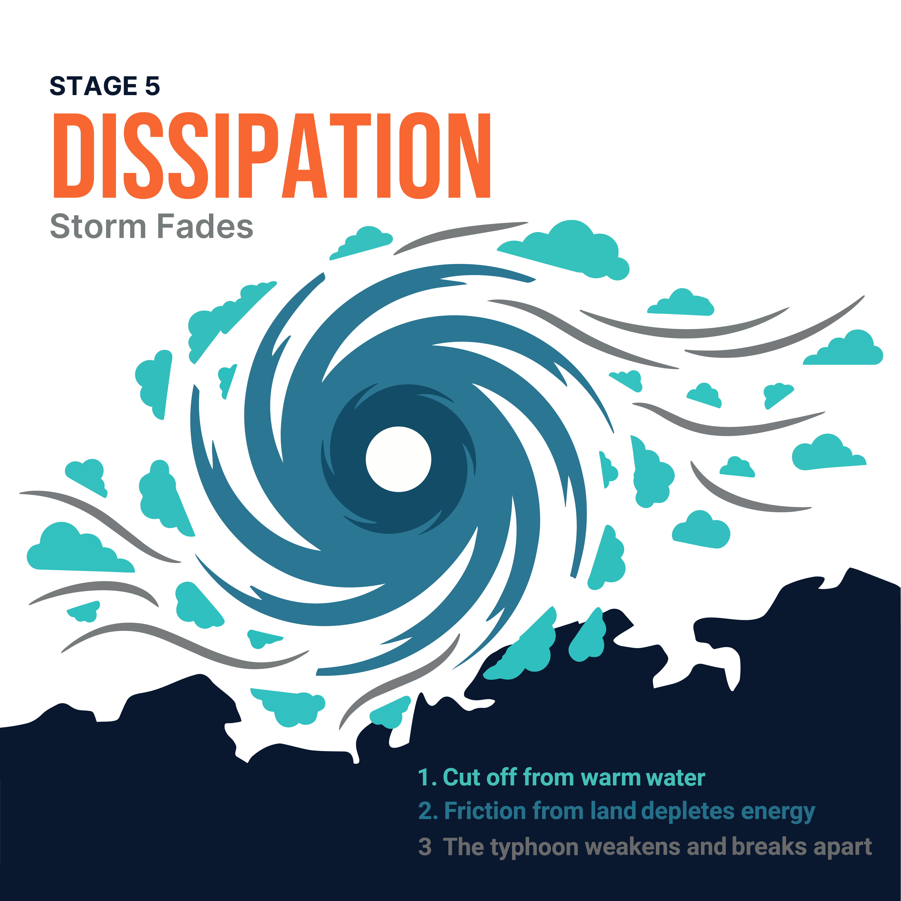
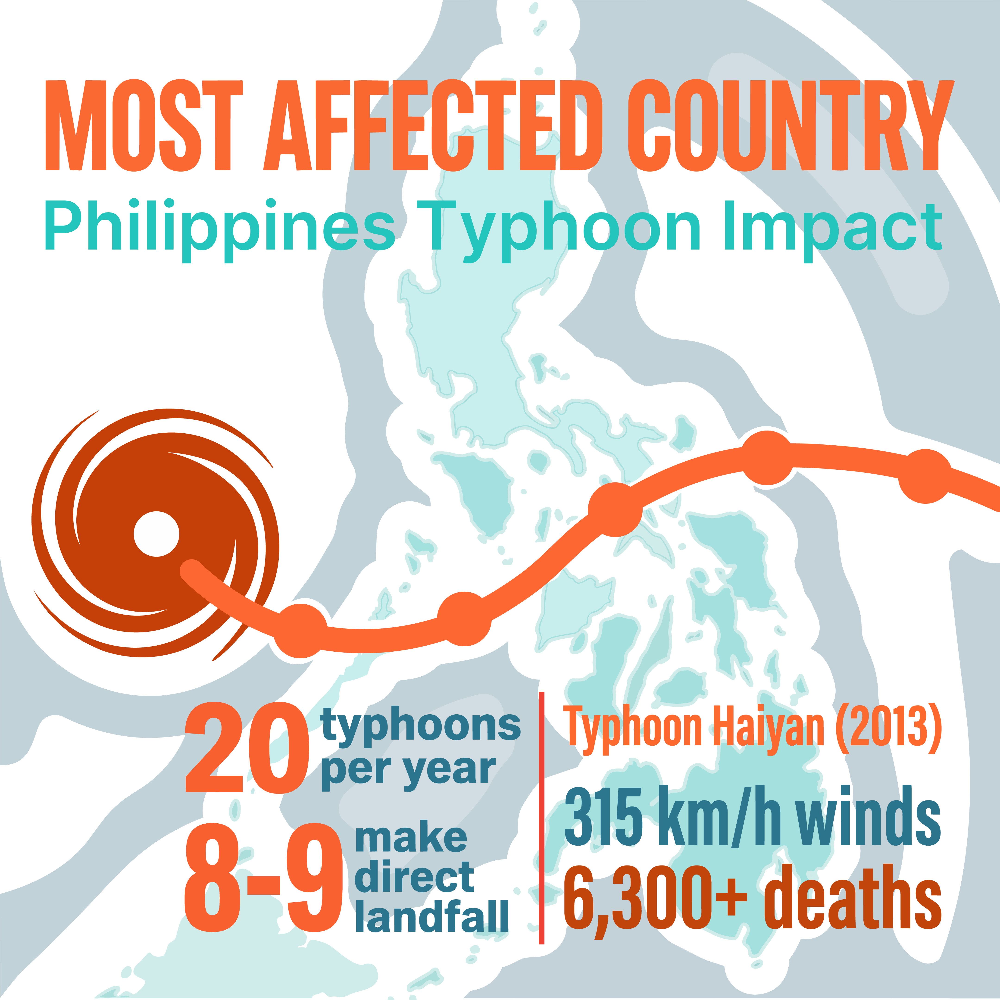
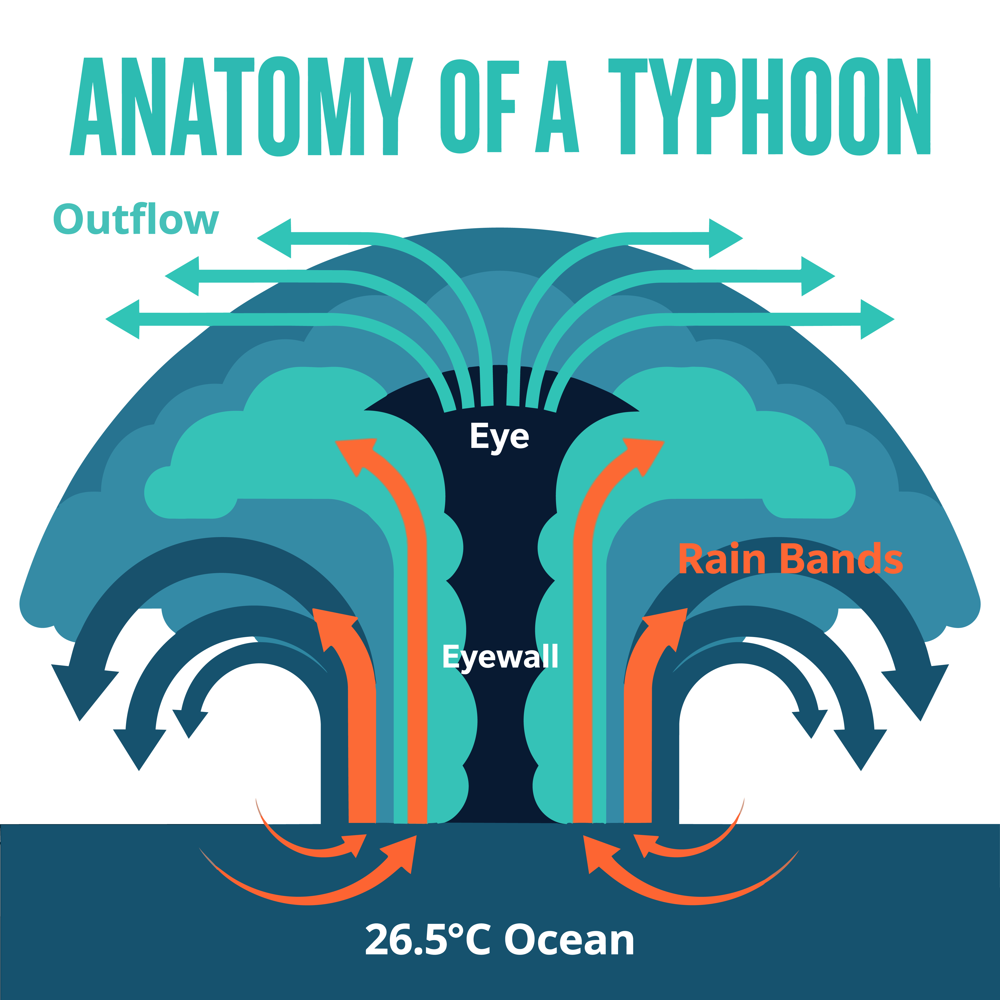
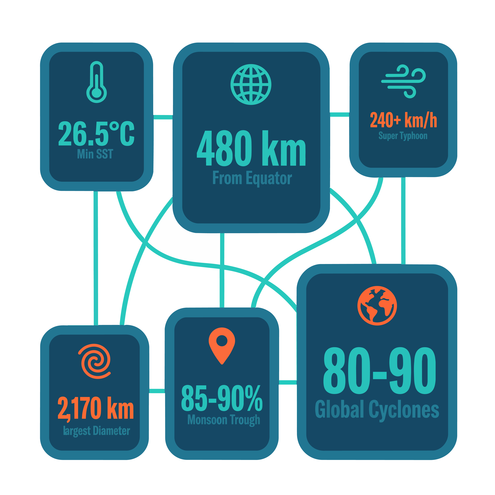
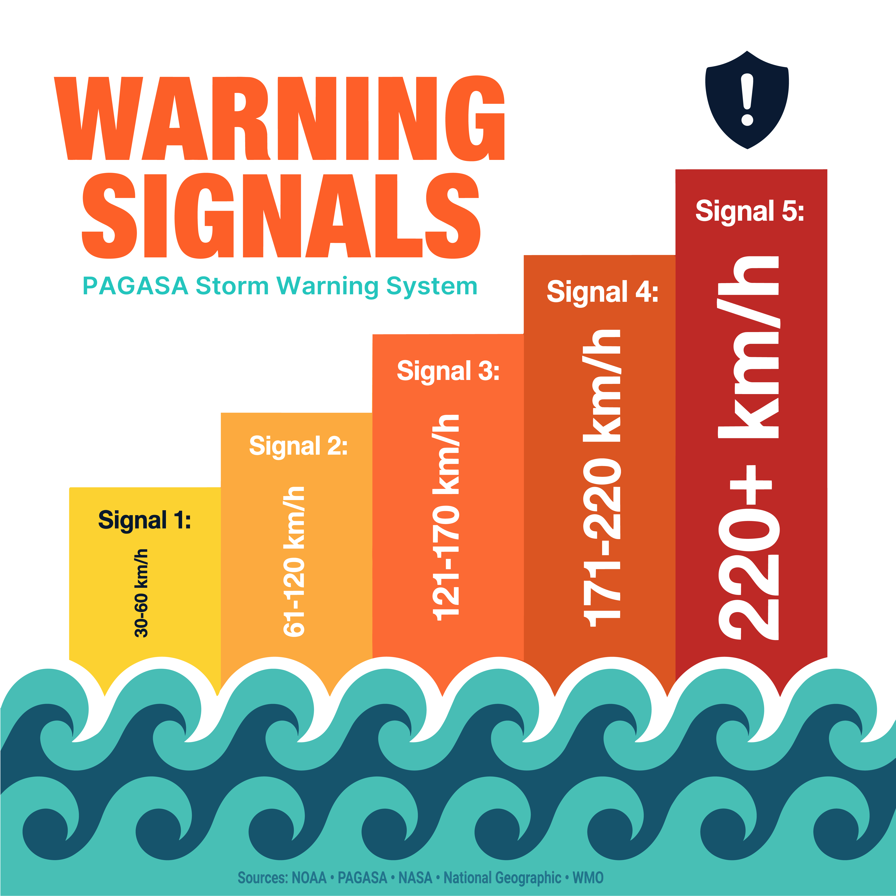

Research
Verify first
Every figure pulled from NOAA, PAGASA, NASA, Nat Geo, and the WMO, and checked against a primary source before earning a place.
A flat-vector system that turns hard meteorological data into something you feel while scrolling — one visual language, two formats, every number traced back to a source.
01 — The brief
The assignment was to take a complex, data-heavy subject and design an illustrated infographic that teaches at a glance. I chose the lifecycle of typhoons — personal, visually rich, and full of numbers that mean nothing until you give them a shape.
The catch was scope. The same content had to live as a single long-form graphic and a ten-slide social carousel — two formats with opposite reading rhythms. A poster rewards a slow vertical scan; a carousel has to land one idea per square. Designing them separately would have meant doing the work twice and ending up with two things that didn't look related.
So I built a system instead of a layout: one palette, one type hierarchy, one illustration pipeline, and a recurring storm-eye motif — each element made once, then deployed into whichever format needed it.
02 — The pipeline
The sequence mattered more than any single tool. Research locked the facts, copy locked the structure, and only then did anything get drawn.
Every figure pulled from NOAA, PAGASA, NASA, Nat Geo, and the WMO, and checked against a primary source before earning a place.
Stage names, stat labels, and the warning ladder were written as copy first, so layout served content instead of the reverse.
Built each illustration as isolated flat shapes — one element at a time, solid colors and clean edges, deliberately no white inside the artwork.
Image Trace in Illustrator — Limited Colors, Ignore White, 6–7 colors — then paths cleaned so nothing breaks at scale.
Type set by hand in a fixed system and the palette held identical across every single component.
The continuous graphic re-cut into ten squares from the same parts. Two formats, zero duplicated artwork.
03 — Build notes
The dark calm spiral center opens the piece and returns at every stage — one motif holding a long scroll together.
Warm tones for heat, cool tones for rotation. The two forces read before any label does.
240+ km/h takes the biggest number and the most aggressive burst — visual volume matched to physical intensity.
Landfall runs dense and red-hot; dissipation thins into drifting clouds and a calm numbered wind-down.
The storm track threads a real map so the casualty figures land somewhere human, not abstract.
A connected stat grid for reference, then a five-step bar chart that climbs the page like the threat it measures.
04 — The carousel
The long-form piece re-cut for a feed: one idea per slide, the storm-eye palette and type hierarchy carried through unchanged so the set reads as a single publication.










05 — What the system bought
The result reads as one publication, not a folder of assets.
Committing to a system up front did the heavy lifting. Because the palette, type hierarchy, and illustration pipeline were decided once, every new element slotted in without re-litigating the basics — and the two deliverables ended up unmistakably related instead of merely similar.
The flat-vector, image-traced approach kept everything editable and resolution-independent, so re-cutting the poster into ten squares was reformatting, not redrawing. The hardest calls were about pacing: letting intensification shout and dissipation go quiet is what makes a static graphic feel like it moves.
Next I'd push the data visualization further — the warning-signal bar chart is the most information-dense moment in the piece, and it's where design and content finally do the same job at once. That's the direction I want to keep building toward.